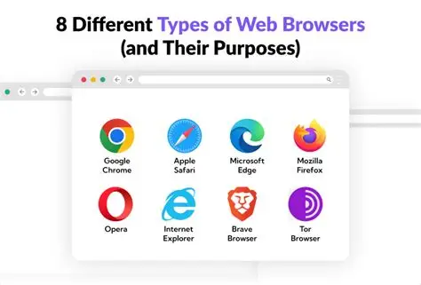

Web browsers are software used to access and view websites.
Browsers use engines to translate HTML, CSS and JavaScript into visible, interactive webpages
Uses URLs to locate webpages and hyperlinks to navigate between them
